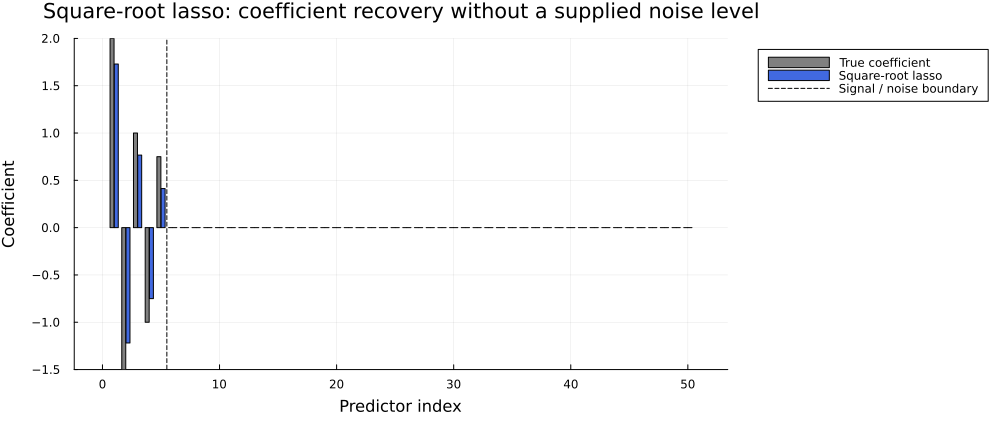

Square-root lasso
Ordinary lasso penalty choices often depend on the noise scale. Square-root lasso uses the residual norm instead of its square, which permits theoretical penalty levels that do not require the unknown noise standard deviation under suitable design and noise assumptions. We illustrate its coefficient recovery, then check numerical accuracy with an independent dual bound.

The square-root lasso minimizes the unnormalized objective
$P(\beta) = \|y - X\beta\|_2 + \lambda \|\beta\|_1$,
in code norm(y - X*β) + λ*norm(β, 1). This is what ProximalBase's SqrtLeastSquaresLoss(y, X) with NormL1(λ) stands for, and CDSolver minimizes it. The usual normalized form norm(y - X*β)/sqrt(n) + λₙ*norm(β, 1) has the same minimizers at λ = sqrt(n)*λₙ, and its values are those of P divided by √n. The loss is not the squared error of the ordinary lasso and it is not Scaled(LeastSquaresLoss). A level λₙ of the order sqrt(2 log(2p/δ)/n) can be chosen without knowing the noise level σ, which is the usual reason to use this loss. This page solves one seeded problem with coordinate descent, checks the answer from X, y, λ and β alone, repeats the solve in Float32 on a SparseIterate, and then shows exact fits, where a run can end without a certificate. See Supported problems for the accepted inputs.
using LinearAlgebra, Random, ProximalBase, ProximalSolversThe problem
The data are drawn from a seeded generator: n = 200 observations, p = 50 features whose columns are scaled to sum(abs2, X[:, j]) ≈ n (up to rounding), five nonzero coefficients and noise of standard deviation 0.5. The level is λ = sqrt(n)*λₙ with λₙ = 1.1*sqrt(2 log(2p/0.05)/n); it does not use the noise level. Any level at or above λmax = ‖Xᵀy‖∞/‖y‖ gives the solution β = 0, so the script checks that λ < λmax. The model has a zero intercept, Gaussian predictors, and Gaussian noise. Column normalization gives comparable predictor scales. The chosen formula illustrates a conservative theoretical level; it does not guarantee support recovery for this finite sample or provide a universal penalty recommendation.
rng = Xoshiro(2026)
n, p = 200, 50
X = randn(rng, n, p)
X ./= sqrt.(sum(abs2, X; dims = 1) ./ n)
βtrue = [[2.0, -1.5, 1.0, -1.0, 0.75]; zeros(p - 5)]
y = X * βtrue .+ 0.5 .* randn(rng, n)
λn = 1.1 * sqrt(2 * log(2p / 0.05) / n)
λ = sqrt(n) * λn
λmax = maximum(abs, X' * y) / norm(y)
println("λ = ", λ, ", λmax = ", λmax)
@assert λ < λmaxλ = 4.288844127744892, λmax = 9.23587185986038Solving it
Coordinate descent with cyclic order and no momentum, which fixes the order of the coordinate updates; the low digits of the printed numbers can differ between Julia versions and machines. The result reports the objective value (minimum), whether a duality certificate was proved (converged), the proved bound on the relative gap (gap) and the number of passes over the coordinates. CDSolver describes the stopping rule.
β = zeros(p)
result = solve!(β, SqrtLeastSquaresLoss(y, X), NormL1(λ), CDSolver(order = :cyclic, momentum = false))
println("minimum = ", result.minimum, ", converged = ", result.converged, ", gap = ", result.gap,
", passes = ", result.passes)
println("indices of the nonzero coefficients: ", findall(!iszero, β))
@assert result.converged && 0 <= result.gap <= 1e-4minimum = 31.36001828547866, converged = true, gap = 8.146670186464216e-8, passes = 18
indices of the nonzero coefficients: [1, 2, 3, 4, 5]Reading the coefficient figure
The plot compares the returned coefficients with the known simulated truth. Shrinkage is expected: minimizing the penalized objective is different from reproducing the generating coefficients. The signal/noise boundary is known only because we generated the data; it is not supplied to the estimator.
using Plots
primary_figure = bar(hcat((1:p) .- 0.18, (1:p) .+ 0.18), hcat(βtrue, β);
bar_width=0.34, label=["True coefficient" "Square-root lasso"],
color=[:gray :royalblue], xlabel="Predictor index", ylabel="Coefficient",
title="Square-root lasso: coefficient recovery without a supplied noise level",
legend=:outertopright, size=(1000, 430))
vline!(primary_figure, [5.5]; color=:black, linestyle=:dash, label="Signal / noise boundary")
savefig(primary_figure, "square_root_lasso.svg")
nothingChecking the answer independently
The function below uses only X, y, λ and a coefficient vector β; it does not use the solver's result or its certificate routine. With the residual r = y - Xβ (assumed nonzero) it forms the dual point θ = t r/‖r‖, t = min(1, λ‖r‖/‖Xᵀr‖∞), which has ‖θ‖ ≤ 1 and ‖Xᵀθ‖∞ ≤ λ. Such a θ bounds the minimum from below for every β: from ‖θ‖ ≤ 1, ‖y - Xβ‖ ≥ θᵀ(y - Xβ), and from ‖Xᵀθ‖∞ ≤ λ, λ‖β‖₁ ≥ θᵀXβ; adding the two gives P(β) ≥ θᵀy. Hence the minimum P* is at least D = θᵀy, and when D > 0, (P(β) - P*)/P* ≤ (P(β) - D)/D. The right-hand side is the relative gap computed here. It is a floating-point evaluation, so it holds up to rounding, which is far below the gaps shown on this page.
objective(X, y, λ, β) = norm(y - X * β) + λ * norm(β, 1)
function check(X, y, λ, β)
r = y - X * β
nr = norm(r)
@assert nr > 0 # the residual direction needs r ≠ 0
t = min(1, λ * nr / maximum(abs, X' * r))
θ = (t / nr) * r
P, D = objective(X, y, λ, β), dot(θ, y)
@assert norm(θ) <= 1 + 1e-12 # θ is feasible up to rounding
@assert maximum(abs, X' * θ) <= λ * (1 + 1e-12)
@assert D > 0 # the ratio below needs D > 0
(objective = P, dualbound = D, relgap = (P - D) / D)
end
c = check(X, y, λ, β)
println("independent objective = ", c.objective, ", dual bound = ", c.dualbound,
", relative gap = ", c.relgap)
@assert isapprox(result.minimum, c.objective; rtol = 1e-10)
@assert c.relgap <= 1e-4independent objective = 31.360018285478656, dual bound = 31.360015730690765, relative gap = 8.146640972739677e-8The reported objective agrees with the one computed from the data, and the relative gap of the point is of the size reported in gap.
Float32 and a SparseIterate
CDSolver accepts a dense Vector or a one-dimensional SparseIterate for this loss, in Float32 or Float64 with all arrays of one type. The solve below uses Float32 copies of X and y and a SparseIterate(Float32, p), which stores the active coordinates. The Float32 data are a different problem from the Float64 one, so the check uses the Float64 values of the Float32 arrays and the same λ. The run passes tol = 1e-5: with the default tol = 1e-7 the stopping threshold for Float32 data is close to the rounding level of the data, see Numerical behavior. The proved gap is then well below the 1e-4 bound.
X32, y32 = Float32.(X), Float32.(y)
x32 = SparseIterate(Float32, p)
result32 = solve!(x32, SqrtLeastSquaresLoss(y32, X32), NormL1(λ),
CDSolver(order = :cyclic, momentum = false, tol = 1e-5))
c32 = check(Float64.(X32), Float64.(y32), λ, Float64.(Vector(x32)))
println("Float32: converged = ", result32.converged, ", gap = ", result32.gap, ", passes = ", result32.passes,
", independent relative gap = ", c32.relgap)
println("active coordinates: ", collect(activecoordinates(x32)))
@assert result32.converged
@assert c32.relgap <= 1e-4Float32: converged = true, gap = 3.9615175e-6, passes = 14, independent relative gap = 3.961516906391557e-6
active coordinates: [1, 2, 3, 4, 5]Limitation: exact fits
For X ≠ 0, the loss ‖y - Xβ‖ is not differentiable at a point with y = Xβ (an exact fit), where the residual is zero. The solver forms its certificate from the residual recomputed in Float64 and the direction r/‖r‖ of that residual (the dual point above); where that residual is 0, the direction cannot be formed. Two things can happen at an exact fit. Coordinate descent can stop at a point that minimizes P along every coordinate but not overall. And a point that is optimal can remain uncertified. After a stop without a certificate, the solver runs a fallback within the pass budget (described in CDSolver): coordinate descent on smoothed versions of P, with the certificate's bounds computed at the points it reaches. It returns a changed point only when these bounds prove that its objective is lower than that of the stopped point. Related issues: #155, #156.
In the first case, y = Xβ₀ with β₀ = (1, -1) and λ = 0.1, started at β₀: no single coordinate improves P(β₀) = λ‖β₀‖₁ = 0.2, while P(0) = ‖y‖ = 0.01. Coordinate descent stops at β₀ without a certificate after one pass, and the fallback reaches β = 0, which is certified.
X1 = [1.0 1.0; 0.0 0.01]
y1 = X1 * [1.0, -1.0]
λ1 = 0.1
β1 = [1.0, -1.0]
r1 = solve!(β1, SqrtLeastSquaresLoss(y1, X1), NormL1(λ1), CDSolver(order = :cyclic, momentum = false))
println("start at the exact fit: β = ", β1, ", converged = ", r1.converged, ", gap = ", r1.gap,
", passes = ", r1.passes, ", P(β) = ", objective(X1, y1, λ1, β1))
@assert r1.converged && 0 <= r1.gap <= 1e-4 && iszero(β1)
@assert objective(X1, y1, λ1, β1) < objective(X1, y1, λ1, [1.0, -1.0])start at the exact fit: β = [0.0, 0.0], converged = true, gap = 2.949029909160578e-15, passes = 29, P(β) = 0.01In the second case, X = [1 2; 0 1], y = (1, 0), λ = 0.1, started at 0: coordinate descent reaches β = (1, 0), which fits y exactly, and stops there without a certificate. This point is optimal. The dual point θ = (0.1, -0.1) has ‖θ‖ ≈ 0.1414 ≤ 1 and Xᵀθ = (0.1, 0.1), so ‖Xᵀθ‖∞ = 0.1 ≤ λ, and θᵀy = 0.1 = P(β); by the weak-duality bound above, P* ≥ 0.1 = P(β). A certificate of the residual-direction form cannot be formed at this point, because r = y - Xβ = 0. The fallback returns the point, certified with a dual lower bound from a point that it visits, where the residual is not 0.
X2 = [1.0 2.0; 0.0 1.0]
y2 = [1.0, 0.0]
λ2 = 0.1
β2 = zeros(2)
r2 = solve!(β2, SqrtLeastSquaresLoss(y2, X2), NormL1(λ2), CDSolver(order = :cyclic, momentum = false))
θ2 = [0.1, -0.1]
println("exact-fit optimum: β = ", β2, ", converged = ", r2.converged, ", gap = ", r2.gap,
", P(β) = ", objective(X2, y2, λ2, β2), ", θᵀy = ", dot(θ2, y2))
@assert r2.converged && 0 <= r2.gap <= 1e-4
@assert norm(θ2) <= 1 + 1e-12 && maximum(abs, X2' * θ2) <= λ2 * (1 + 1e-12)
@assert isapprox(objective(X2, y2, λ2, β2), dot(θ2, y2); rtol = 1e-12)exact-fit optimum: β = [1.0, 0.0], converged = true, gap = 6.188490796098803e-6, P(β) = 0.1, θᵀy = 0.1The fallback does not guarantee recovery at exact fits: it can end without a certificate, at the stopped point or at a point with a proved lower objective that is not optimal. The problem below has no noise and more features than observations (n = 40, p = 120, y = Xβ with five nonzero coefficients), at a level of 1e-3 λmax, solved from 0. Coordinate descent stops without a certificate, the fallback runs within its budget of max(2000, 20 * passes) further passes (passes those of the stop, a budget below the default maxpasses here) and ends without one, and the run reports converged = false and gap = NaN, with a warning. Such a point should be checked by other means.
rng3 = Xoshiro(155)
n3, p3 = 40, 120
X3 = randn(rng3, n3, p3)
y3 = X3 * [[2.0, -1.5, 1.0, -1.0, 0.75]; zeros(p3 - 5)]
λ3 = 1e-3 * maximum(abs, X3' * y3) / norm(y3)
β3 = zeros(p3)
r3 = solve!(β3, SqrtLeastSquaresLoss(y3, X3), NormL1(λ3), CDSolver(order = :cyclic, momentum = false))
println("noiseless, p > n, small level: converged = ", r3.converged, ", gap = ", r3.gap,
", passes = ", r3.passes, ", P(β) = ", objective(X3, y3, λ3, β3))
@assert !r3.converged && isnan(r3.gap)┌ Warning: coordinate descent stopped without a duality certificate after 2021 passes (last change 0.000101, tolerance 1.75e-6): the point is not certified to be within a relative 1e-4 of the minimum (for example at an exact fit y = X*beta with a positive penalty, where a coordinatewise minimum need not be a minimum).
└ @ ProximalSolvers ~/work/ProximalSolvers.jl/ProximalSolvers.jl/src/cd/solver.jl:447
noiseless, p > n, small level: converged = false, gap = NaN, passes = 2021, P(β) = 0.03303226493765438Not supported
solve! refuses the following with an ArgumentError, see Supported problems: this loss with ProximalGradientDescent or AccProxGradDescent (ProximalBase provides no gradient for it), and, with CDSolver, a weighted NormL1, Scaled(SqrtLeastSquaresLoss, α) (for a positive finite α, use the unscaled loss at the level λ/α, which has the same minimizers), λ = 0 (use LeastSquaresLoss, which has the same minimizers), an ElasticNet penalty and a BlockIterate. The scaled-lasso estimator, which estimates the noise level as well, is a separate computation and is not part of this page; see Scaled lasso.
Statistical limitations
Avoiding a supplied noise scale does not remove the assumptions behind a penalty formula. Correlation, heavy-tailed errors, poor scaling, or misspecification can affect selection and prediction. A sparse fit is not a test of which predictors are truly relevant, and the exact-fit examples above show why numerical certification must also be examined.
What we learned
Changing squared error to a residual norm changes both penalty scaling and the optimality certificate. We saw coefficient shrinkage in a reproducible regression, checked an independent duality gap, and separated the statistical interpretation from the solver's behavior at exact fits.